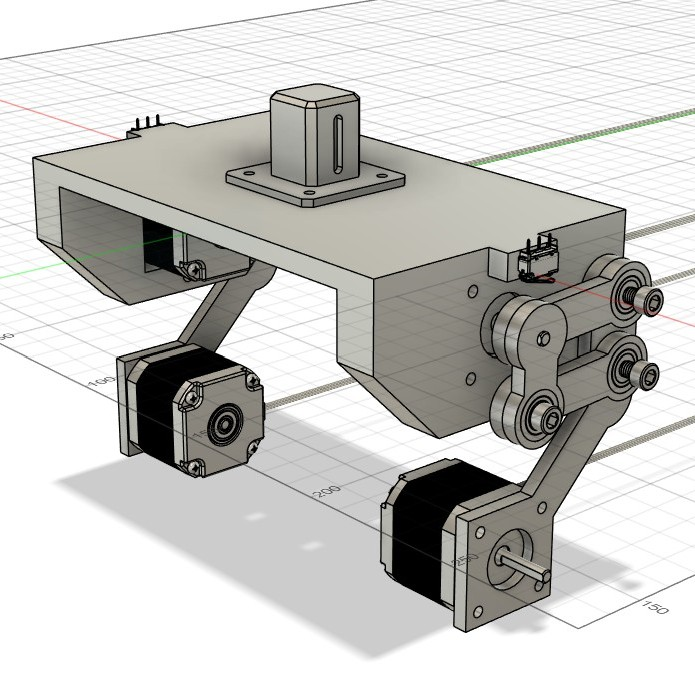
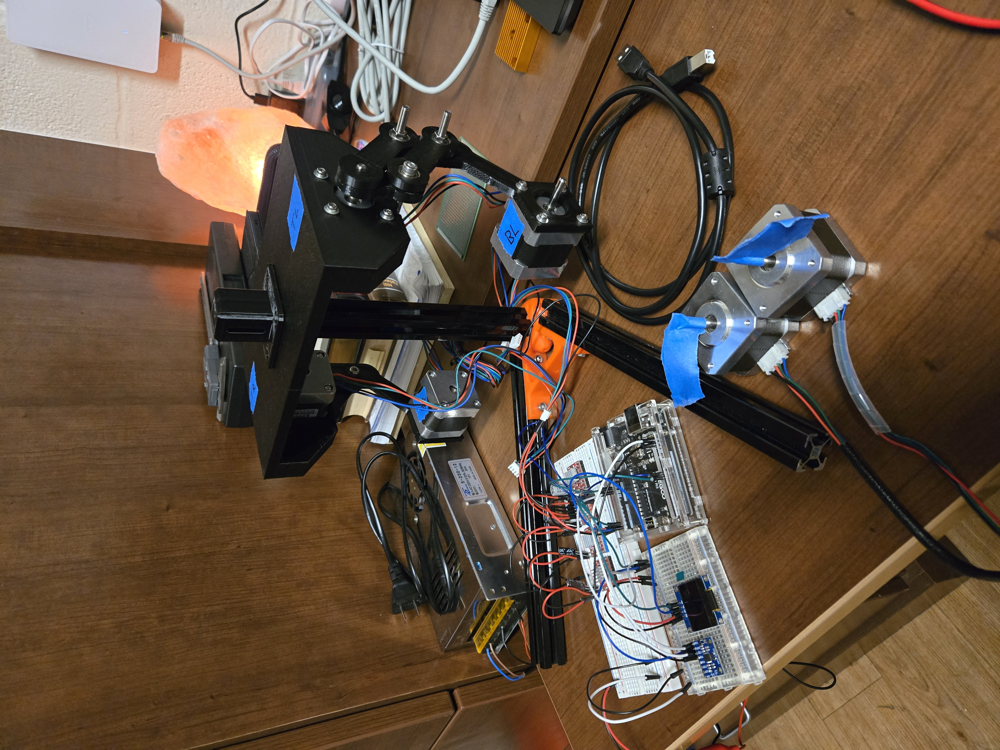
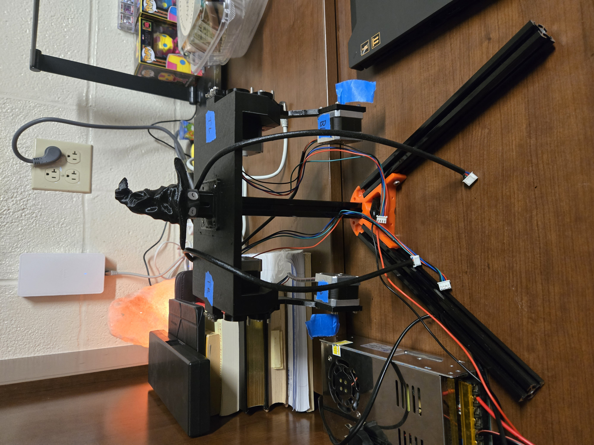
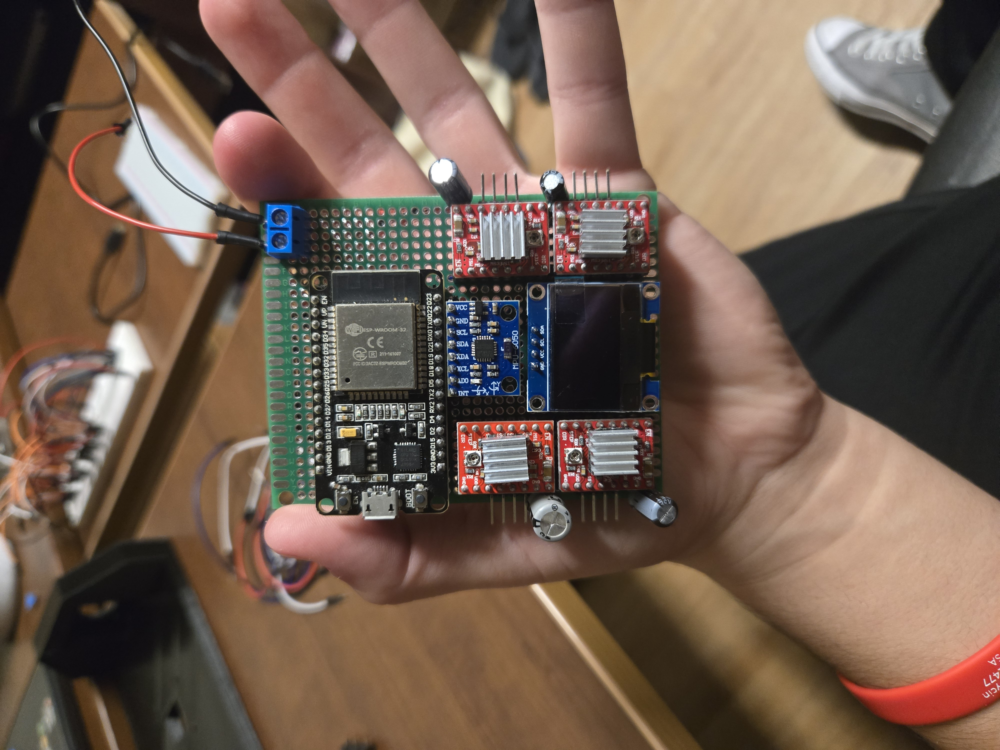
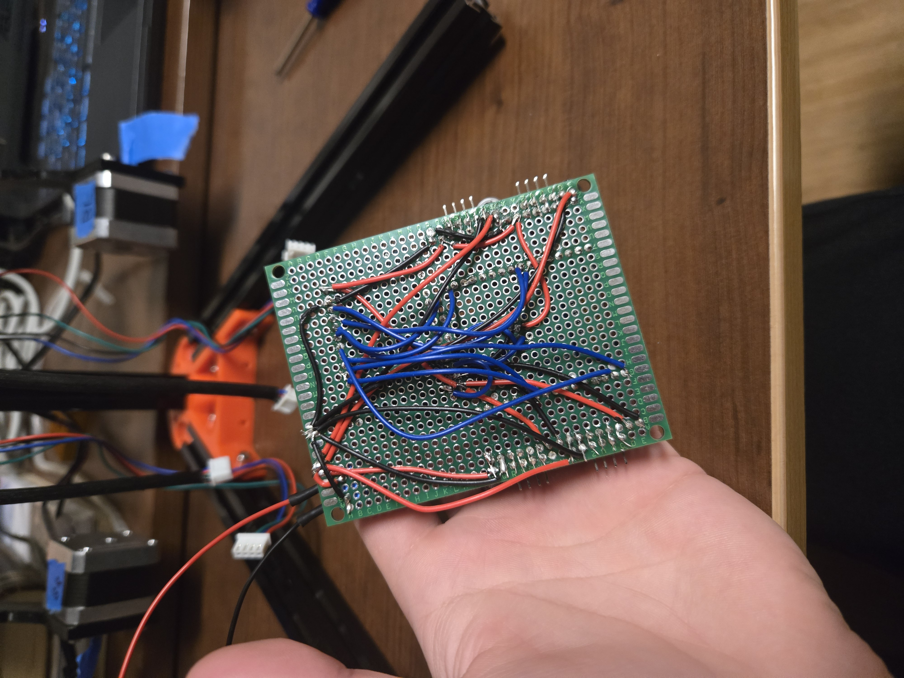

% ----- AI4 Algorithm -----
function bestMove = connect4_ai_MMABP(board, depth, prevTree)
% Main function to determine the best move using Minimax and Alpha-Beta Pruning
AI = 1;
PLAYER = 2;
if nargin < 3
prevTree = []; % Initialize previous tree if not provided
end
% Check if we can reuse previous calculations
if ~isempty(prevTree)
root = find_previous_node(prevTree, board);
if isempty(root)
root = create_node(board, NaN, 0, []); % Start fresh if no match
end
else
root = create_node(board, NaN, 0, []); % Start new tree
end
alpha = -Inf;
beta = Inf;
bestMove = NaN;
bestScore = -Inf;
validMoves = find(board(1, :) == 0);
% Prioritize center moves first
[~, sortedIdx] = sort(abs(validMoves - ceil(size(board, 2) / 2)));
validMoves = validMoves(sortedIdx);
for col = validMoves
newBoard = drop_piece(board, col, AI);
child = create_node(newBoard, col, 1, root);
score = minimax(child, depth - 1, false, alpha, beta, AI, PLAYER);
if score > bestScore
bestScore = score;
bestMove = col;
end
alpha = max(alpha, score);
if beta <= alpha
break; % Alpha-beta pruning
end
end
end
% Function to find a previously computed node matching the current board
function node = find_previous_node(prevTree, board)
for i = 1:length(prevTree.children)
if isequal(prevTree.children{i}.board, board)
node = prevTree.children{i};
return;
end
end
node = [];
end
% Function to create a node in the game tree
function node = create_node(board, move, depth, parent)
node.board = board;
node.move = move;
node.depth = depth;
node.children = {};
node.score = NaN;
node.parent = parent;
end
% Function to generate possible child nodes
function children = generate_children(parent, player)
validMoves = find(parent.board(1, :) == 0);
children = cell(1, length(validMoves));
for i = 1:length(validMoves)
col = validMoves(i);
newBoard = drop_piece(parent.board, col, player);
children{i} = create_node(newBoard, col, parent.depth + 1, parent);
end
end
% Minimax function with Alpha-Beta Pruning
function score = minimax(node, depth, maximizingPlayer, alpha, beta, AI, PLAYER)
if depth == 0 || is_winning(node.board, AI) || is_winning(node.board, PLAYER)
node.score = evaluate_board(node.board, AI, PLAYER);
score = node.score;
return;
end
player = AI;
if ~maximizingPlayer
player = PLAYER;
end
node.children = generate_children(node, player);
if maximizingPlayer
maxEval = -Inf;
for i = 1:length(node.children)
eval = minimax(node.children{i}, depth - 1, false, alpha, beta, AI, PLAYER);
maxEval = max(maxEval, eval);
alpha = max(alpha, eval);
if beta <= alpha
break;
end
end
node.score = maxEval;
score = maxEval;
else
minEval = Inf;
for i = 1:length(node.children)
eval = minimax(node.children{i}, depth - 1, true, alpha, beta, AI, PLAYER);
minEval = min(minEval, eval);
beta = min(beta, eval);
if beta <= alpha
break;
end
end
node.score = minEval;
score = minEval;
end
end
% Function to drop a piece into a column
function newBoard = drop_piece(board, col, piece)
newBoard = board;
for row = size(board,1):-1:1
if newBoard(row, col) == 0
newBoard(row, col) = piece;
return;
end
end
end
% Function to evaluate the board state
function score = evaluate_board(board, AI, PLAYER)
if is_winning(board, AI)
score = 100000;
elseif is_winning(board, PLAYER)
score = -100000;
else
center_bias = center_control(board, AI);
piece_weight = 10;
score = piece_weight * (count_connections(board, AI) - count_connections(board, PLAYER)) + center_bias;
end
end
% Function to prioritize center control with a strong bias
function bias = center_control(board, piece)
[~, cols] = size(board);
center_column = ceil(cols / 2);
bias = sum(board(:, center_column) == piece) * 100;
end
% Function to check if a player has won
function win = is_winning(board, piece)
[rows, cols] = size(board);
win = false;
% Check Horizontally
for r = 1:rows
for c = 1:cols-3
if all(board(r, c:c+3) == piece)
win = true;
return;
end
end
end
% Check Vertically
for r = 1:rows-3
for c = 1:cols
if all(board(r:r+3, c) == piece)
win = true;
return;
end
end
end
% Check Down-Right Diagonal
for r = 1:rows-3
for c = 1:cols-3
if all(diag(board(r:r+3, c:c+3)) == piece)
win = true;
return;
end
end
end
% Check Down-Left Diagonal
for r = 4:rows
for c = 1:cols-3
if all(diag(flipud(board(r-3:r, c:c+3))) == piece)
win = true;
return;
end
end
end
end
% Function to count open sequences of 1, 2, 3, or 4
function score = count_connections(board, piece)
score = 0;
[rows, cols] = size(board);
% Count Horizontal Patterns
for r = 1:rows
for c = 1:cols-3
segment = board(r, c:c+3);
score = score + evaluate_segment(segment, piece);
end
end
% Count Vertical Patterns
for r = 1:rows-3
for c = 1:cols
segment = board(r:r+3, c);
score = score + evaluate_segment(segment, piece);
end
end
% Count Down-Right Diagonal Patterns
for r = 1:rows-3
for c = 1:cols-3
segment = diag(board(r:r+3, c:c+3));
score = score + evaluate_segment(segment, piece);
end
end
% Count Down-Left Diagonal Patterns
for r = 4:rows
for c = 1:cols-3
segment = diag(flipud(board(r-3:r, c:c+3)));
score = score + evaluate_segment(segment, piece);
end
end
end
% Function to evaluate a segment of four positions
function segment_score = evaluate_segment(segment, piece)
segment_score = 0;
piece_count = sum(segment == piece);
empty_count = sum(segment == 0);
if piece_count == 4
segment_score = 100;
elseif piece_count == 3 && empty_count == 1
segment_score = 50;
elseif piece_count == 2 && empty_count == 2
segment_score = 10;
elseif piece_count == 1 && empty_count == 3
segment_score = 1;
end
end
% This code snippet is meant to replace the center control function in the
% MMABP Algorithm with a gradient version requiring more power. The way the
% center control in the current MMABP Algorithm works is that it only looks
% at the center column. It adds more bias the more pieces the Algorithm can
% get in the center. This is good for limited computation power where we can
% only look a few moves ahead but we really want to occupy the center.
%
% This version of the center control algorithm is gradient depending on the
% column. The center column of course has the most points to increase the
% bias but each column outward has less and less to add to the bias. This
% version of the algorithm plays on the assumption that we have enough
% comutational power to see further ahead while not taking 20 minutes per
% turn (It did do this at one point, and yes I waited and timed it).
% Ultimately, this alternate form of center control allows us to prioritize
% center control while giving the algorithm some leeway to find a more optimal
% path forward that isnt necessarily in the perfect center.
% Function to prioritize center control with a gradual bias
function bias = center_control(board, piece)
[~, cols] = size(board);
center_column = floor(cols / 2) + 1; % Get center column index
% Initialize bias
bias = 0;
% Loop over all columns to give bias based on proximity to center
for c = 1:cols
% Calculate the distance from the center column
distance = abs(center_column - c);
% Assign a bias that decreases as the distance from the center increases
if board(1, c) == 0 % Only consider open columns
% Bias is greater for columns closer to the center
bias = bias + (cols - distance) * 15; % Adjust multiplier as needed
end
end
end